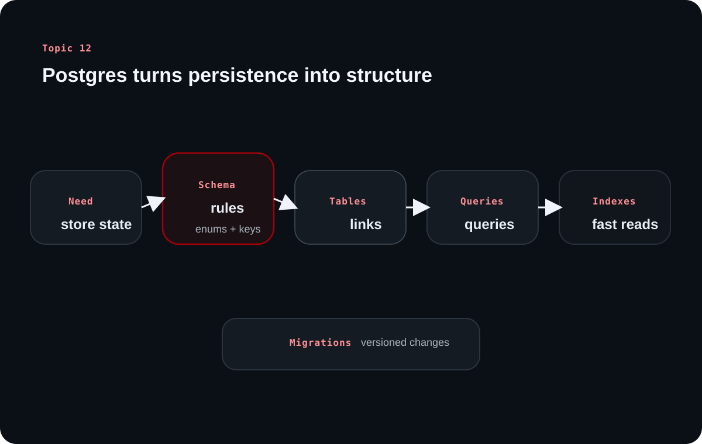

Topic 12 explains databases from first principles before it narrows into PostgreSQL. The goal is not to memorize SQL syntax alone, but to understand what persistent storage solves and how schema discipline affects backend quality.
The source's through-line is practical: data survives application restarts because a DBMS stores and organizes it on durable storage, then gives the backend safe ways to read, write, validate, and evolve that data over time.
Chapter 1
Persistence is the reason databases exist in backend systems
The source opens with persistence because storage technology only makes sense once the need is clear.
Persistence means state survives the life of one process
A to-do list that still shows its tasks after the app closes demonstrates persistence. The source uses this simple example to show that backend systems need data to remain available across sessions, machines, and time.
That is why databases matter so much in backend work. They turn temporary runtime state into durable application state that users can trust.
A database is broader than a server-side SQL product
The source points out that the word database is broad. Contacts on a phone, browser local storage, cookies, or even text files can all hold structured information. In backend engineering, though, the term usually narrows to persistent disk-backed systems that offer CRUD operations at scale.
The practical distinction is that backend databases must handle much larger volumes, multiple clients, and concurrent access patterns with far more discipline than ad hoc storage formats.
Chapter 2
Storage tradeoffs and data models shape how a backend stores information
The source then compares the physical and logical choices behind database systems.
Disk gives capacity and durability; RAM gives speed
Traditional databases store data on disk because it is far cheaper and offers much more capacity than RAM. RAM is faster, which is why caching systems such as Redis are so useful, but it is also expensive and limited in size.
This tradeoff explains why backend systems often combine both layers: durable storage for truth, memory for speed.
A DBMS adds structure, integrity, security, and concurrency control
The source treats the DBMS as the real leap beyond text files. A DBMS organizes data for efficient retrieval, enforces integrity rules, applies access controls, and protects concurrent writes from collapsing into corruption.
Text files fail precisely on those points. They are hard to parse efficiently, cannot enforce schema or constraints, and provide no built-in control over simultaneous modifications.
Clarified note
The most useful beginner distinction is this: storage only keeps bytes, while a DBMS keeps data plus rules about what that data is allowed to be.
Chapter 3
Relational structure is why PostgreSQL fits so many backend systems
The source compares relational and non-relational systems, then explains why PostgreSQL remains a strong default choice.
Relational and NoSQL systems optimize for different kinds of flexibility
Relational systems use tables, rows, columns, and explicit relationships. They prefer predefined schemas and strong integrity guarantees, which is why they work well for domains such as CRM platforms where consistency and relationships are central.
NoSQL systems trade some structure for schema flexibility. That can help with rapidly changing content shapes, such as CMS-like systems where documents vary more widely from record to record.
Model
Strength
Good fit from the source
Relational
Strong integrity and clear relationships
CRM-style systems
NoSQL
Flexible structure for varied content
CMS-style systems
PostgreSQL with JSONB
Relational core with selective flexibility
Teams that want both discipline and some dynamic fields
PostgreSQL is favored because it is reliable, extensible, and practical
The source highlights PostgreSQL's open-source nature, standards alignment, reliability, extensibility, and broad real-world adoption. It also calls out JSON and JSONB support, which allow teams to keep a relational foundation while still modeling some flexible data.
That makes PostgreSQL feel less like a narrow SQL product and more like a capable general-purpose backend database that scales from startup use to larger production systems.
Learning diagram

PostgreSQL turns persistence into a repeatable workflow: schema rules, relational tables, safe queries, and performance-oriented indexes.
Chapter 4
Schema design, enums, migrations, and relationships keep data trustworthy
The middle of the source moves into concrete database design using a project-management style schema.
Data types and enums encode meaning, not just storage
The source reviews primary numeric and string types, then makes practical recommendations such as choosing numeric types for precise values like prices and preferring TEXT over overly restrictive VARCHAR declarations when flexibility is needed.
Enums are presented as both integrity tools and documentation. They constrain fields such as status or role to known values and make the schema's allowed states easier to reason about.
Migrations and relationships let the schema evolve safely over time
Migrations are versioned schema changes with clear up and down paths. They allow teams to coordinate structural changes, roll them forward in order, and reason about reversibility in production workflows.
The project-management example in the source uses one-to-one, one-to-many, and many-to-many relationships, plus foreign keys and referential actions such as RESTRICT or CASCADE. Those choices protect data meaning rather than leaving relationships implicit in application code.
Chapter 5
Queries, triggers, and indexes turn schema into day-to-day backend work
The final source sections move from schema structure to the mechanics of actually using that structure in APIs.
Parameterized queries and API-friendly query patterns belong together
The source emphasizes parameterized queries because they prevent SQL injection by treating user input as data rather than executable SQL. This is a security baseline, not an optional extra.
It also covers dynamic filtering, sorting, and pagination because real backend endpoints rarely expose one fixed query. The database layer needs to support useful API consumption patterns without abandoning safety.
Triggers automate consistency; indexes accelerate the queries that matter most
An updated_at trigger is a good example of pushing repetitive integrity work into the database itself. Instead of trusting every application path to remember a timestamp rule, the database enforces it automatically.
Indexes then improve lookup speed for frequently filtered, joined, or sorted fields. The source is careful not to oversell them: indexes help reads, but they also add write overhead, so they should follow actual query patterns rather than guesswork.
Tool
What it solves
Typical example from the source
Parameterized query
Security and safe input handling
Lookup by email or filter by user input
Trigger
Automatic consistency on updates
Maintain updated_at
Index
Faster reads on common paths
email, created_at, project_id, status
Overall takeaway
What to remember
The source presents databases as more than storage. PostgreSQL becomes valuable when persistence, schema rules, migrations, safe queries, and performance choices all work together as one disciplined backend layer.